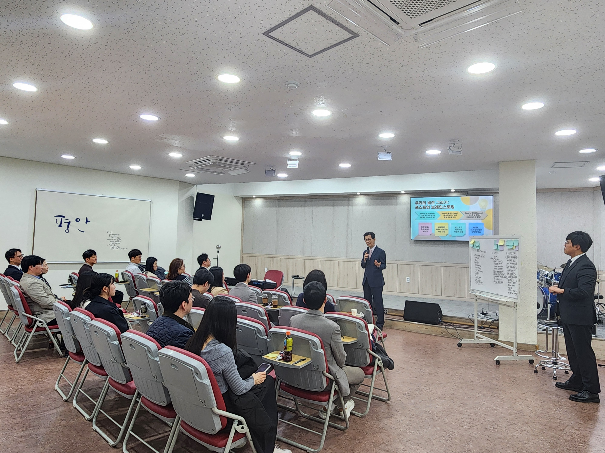

함께 그리며 걷는
3040 공동체
우리 공동체의 첫 목소리와 비전을 담았습니다.
메뉴를 클릭해 상세 내용을 확인해 보세요.

우리 공동체의 첫 목소리와 비전을 담았습니다.
메뉴를 클릭해 상세 내용을 확인해 보세요.
"나만 힘든 것이 아니구나"를 느낄 수 있도록 평가 없는 소그룹 나눔 문화를 정착시킵니다.
직장과 육아라는 삶의 치열한 현장에서 하나님을 발견하는 신앙의 일상화를 돕습니다.
육아 및 환경적 제약으로 참석하지 못하는 가정을 위해 실질적인 환경 개선을 논의합니다.
성도님들의 마음을 담은 포스트잇을 붙여주세요.